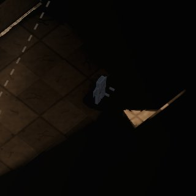
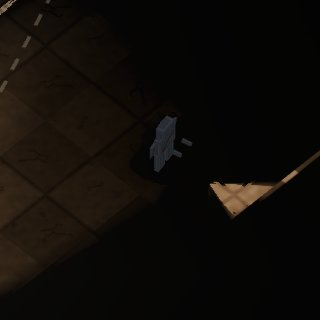
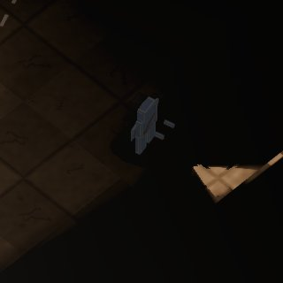
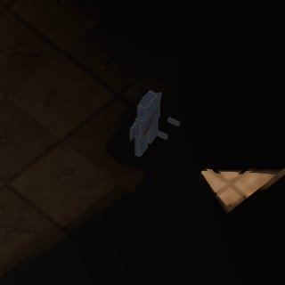
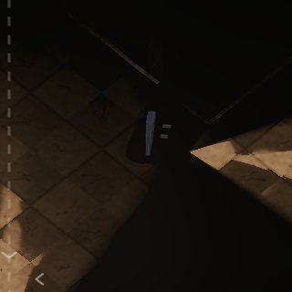
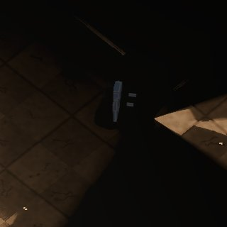
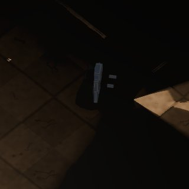
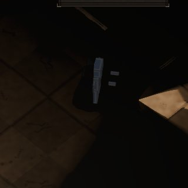
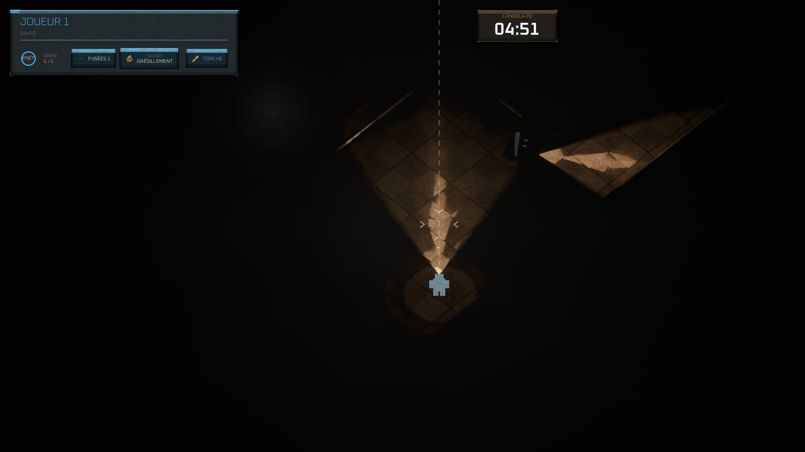

Le zoom du duel — Q15, sur image
Vue isométrique, lacet 45° (J2 à +180°, option B), décalage vers la visée 0,15, torche ×0,75 (pistolet, la classe
de départ). Rendu logiciel du cloud (llvmpipe) : les couleurs et le noir valent, pas la cadence. Aucune
ligne du jeu n'a changé : les images viennent du drapeau de débogage --zoom=X. Le défaut actuel, ×1,5, est encadré.
Les chiffres
Pixels d'écran en 1920×1080 ; sur un écran de 1440 lignes le jeu se rastérise à la fenêtre, tout est ×4/3. « Corps » : la boîte du corps voxel de J2 projetée par la caméra iso (largeur × hauteur). « Carte visible » : la part de la surface de la carte que couvre l'écran dans la scène photographiée.
| Zoom | Corps 1080 | Corps 1440 | Zone de touche (Ø 36 px) | Torche à l'écran (au plus long) | … en part de la demi-largeur | Carte visible — Cloître | — Croisée | Écran scindé — Cloître / Croisée |
|---|---|---|---|---|---|---|---|---|
| ×1,25 | 47 × 57 | 63 × 77 | 57 × 45 | 487 px | 51 % | 73 % | 73 % | 40 % / 47 % |
| ×1,50 | 56 × 68 | 75 × 91 | 68 × 54 | 585 px | 61 % | 55 % | 59 % | 29 % / 34 % |
| ×1,75 | 66 × 80 | 88 × 107 | 80 × 63 | 682 px | 71 % | 40 % | 46 % | 22 % / 26 % |
| ×2,00 | 75 × 92 | 100 × 122 | 91 × 72 | 780 px | 81 % | 32 % | 37 % | 17 % / 20 % |
Jusqu'où l'écran montre, comparé aux torches
Depuis le joueur, en pixels du monde, en terrain ouvert (loin des bords de carte, où la caméra s'arrête). La caméra avance de 0,15 × la hauteur visible vers la visée : on voit plus loin devant que derrière. Deux cas, selon que la visée monte vers le haut de l'écran (le plus serré : l'image est moins haute que large) ou part vers la droite. Devant : si l'écran montre plus loin que votre torche, la lumière d'un adversaire qui arrive en face apparaît avant qu'il n'entre dans votre faisceau. Derrière : si une torche porte plus loin que ce que votre écran montre, son porteur peut vous éclairer — vous voir — depuis hors de votre écran ; vous voyez la lumière vous toucher, pas d'où elle vient.
| Zoom | Visée vers le haut : devant | derrière | côtés | Visée vers la droite : devant | derrière | côtés | Classes qui éclairent depuis hors écran (dans le dos, visée haute) |
|---|---|---|---|---|---|---|---|
| ×1,25 | 562 | 302 | 605 | 735 | 476 | 432 | 4 sur 10 : pistolet, fusil, sentinelle, arbalete |
| ×1,50 | 468 | 252 | 504 | 612 | 396 | 360 | 7 sur 10 : incendiaire, spectre, fumiste, pistolet, fusil, sentinelle, arbalete |
| ×1,75 | 401 | 216 | 432 | 525 | 340 | 309 | 9 sur 10 : allumeur, occulteur, incendiaire, spectre, fumiste, pistolet, fusil, sentinelle, arbalete |
| ×2,00 | 351 | 189 | 378 | 459 | 297 | 270 | 10 sur 10 : pompe, allumeur, occulteur, incendiaire, spectre, fumiste, pistolet, fusil, sentinelle, arbalete |
Portées des torches (px de monde, ×0,75 compris) : pompe 192 · allumeur 230 · occulteur 250 · incendiaire 269 · spectre 269 · fumiste 288 · pistolet 307 · fusil 346 · sentinelle 499 · arbalete 672.
Le Cloître
Vue unique, 1920×1080, au creux de la respiration du bandeau
J1 (bleu), torche vers l'avant ; J2 au bord de son faisceau, torche allumée, qui regarde de côté. Même position et même instant de la manche à chaque zoom. Là où la caméra touche le bord de la carte, elle s'arrête : J1 n'est plus au milieu de l'écran (c'est le jeu, pas la prise de vue).


La même vue au sommet de la respiration du bandeau LED
Le bandeau des murs (mur_led.gd) respire toutes les 8,5 s et allume le sol le long des murs. Les vues ci-dessus sont prises au creux, celles-ci au sommet, au même endroit : ce que la bande révèle dépend aussi du zoom.


Le corps de J2, recadré 1:1 (320 px de côté)




Écran scindé, même scène, au creux suivant de la respiration
À droite, J2 est pris dans le faisceau de J1 : le voile blanc est son éblouissement, pas un défaut d'image.


La Croisée
Vue unique, 1920×1080, au creux de la respiration du bandeau
J1 (bleu), torche vers l'avant ; J2 au bord de son faisceau, torche allumée, qui regarde de côté. Même position et même instant de la manche à chaque zoom. Là où la caméra touche le bord de la carte, elle s'arrête : J1 n'est plus au milieu de l'écran (c'est le jeu, pas la prise de vue).


La même vue au sommet de la respiration du bandeau LED
Le bandeau des murs (mur_led.gd) respire toutes les 8,5 s et allume le sol le long des murs. Les vues ci-dessus sont prises au creux, celles-ci au sommet, au même endroit : ce que la bande révèle dépend aussi du zoom.


Le corps de J2, recadré 1:1 (320 px de côté)




Écran scindé, même scène, au creux suivant de la respiration
À droite, J2 est pris dans le faisceau de J1 : le voile blanc est son éblouissement, pas un défaut d'image.


Jusqu'où voit un joueur
Chaque carte vue de dessus (murs clairs, sol brun). Le contour coloré est ce que l'écran de J1 montre au sol, à chaque zoom, dans la scène photographiée (vue unique, lacet 45°, regard avancé, caméra arrêtée aux bords). Le cône jaune est sa torche, le cercle pointillé sa portée : ils ne changent pas avec le zoom. Point bleu J1, point rouge J2.
×1,25 ×1,50 ×1,75 ×2,00
Contrôle en 2560×1440


Refaire : docs/iso/cloud/zoom/refaire.sh puis python3 docs/iso/cloud/zoom/fabrique_planche.py. Détails et limites : RAPPORT.md.